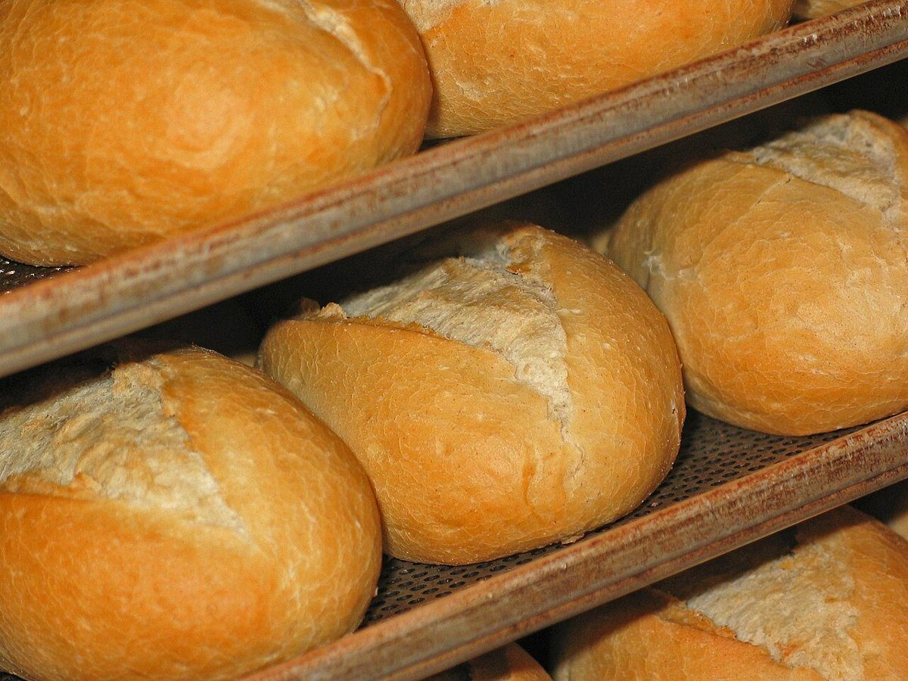
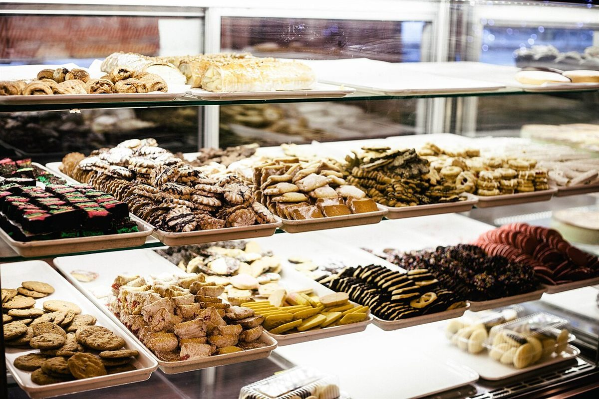

制作側の連想
パラソルの部位を、配置図にしてみる
このサイトは、細い支柱の上に大きな傘面をひろげる道具・パラソルを図にしたつもりで作りました。六つの部位に番号をふり、上の図と並べています。制作側の連想で、お店の理念・由来とは無関係です。実際のパラソルの仕様を示すものではありません。
凡例
六つの部位
- 1天頂キャップ傘の一番上にかぶさる、小さな丸いふた。
- 2キャノピー日ざしをさえぎる、縞模様の大きな傘面。
- 3リブ傘布の内側に広がり、傘面を支える細い骨。
- 4ランナーポールを上下に滑り、リブを開いたり閉じたりする輪。
- 5ポール中央に立って全体を支える、まっすぐな支柱。
- 6ベースポールを地面で受けとめる、幅のある台座。
写真(イメージ)
パンとコーヒーの写真




写真はイメージです。お店のものではありません。